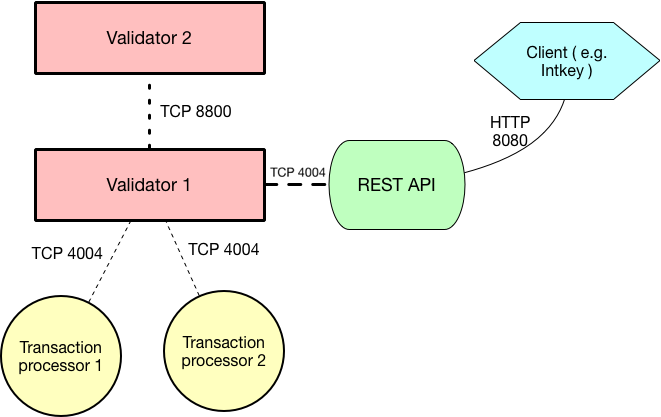

Using Sawtooth on Ubuntu 16.04¶
This document guides you through the process of setting up Hyperledger Sawtooth for application development on Ubuntu, introduces some of the basic Sawtooth concepts necessary for application development, and walks through performing the following tasks:
- Installing Sawtooth on Ubuntu 16.04
- Starting a Sawtooth validator and related components
- Submitting transactions to the REST API
- Viewing blocks, transactions, and state with the sawtooth CLI tool
Upon completion of this section, you will be prepared for subsequent sections that describe application development topics, such as implementing business logic with transaction families and writing clients which use Sawtooth’s REST API.
Overview of Sawtooth Components¶
A running Sawtooth network consists of the following applications or processes:
{kind=link}
This diagram represents a simple network with just two validators and two transaction processors. The second validator’s transaction processors are not depicted.
Installation¶
Ubuntu packages are provided by one of the Sawtooth package repositories: stable or nightly. We recommend using the stable repository. To add the stable repository, run the following commands in a terminal window:
$ sudo apt-key adv --keyserver hkp://keyserver.ubuntu.com:80 --recv-keys 8AA7AF1F1091A5FD
$ sudo add-apt-repository 'deb http://repo.sawtooth.me/ubuntu/0.8/stable xenial universe'
$ sudo apt-get update
or, to use the nightly repository:
$ sudo apt-key adv --keyserver hkp://keyserver.ubuntu.com:80 --recv-keys 44FC67F19B2466EA
$ sudo apt-add-repository "deb http://repo.sawtooth.me/ubuntu/nightly xenial universe"
$ sudo apt-get update
Caution
Nightly builds may be out-of-sync with the documentation and have not gone through long-running network testing. We really do recommend the stable repository.
Sawtooth consists of several Ubuntu packages, which can be installed together using the ‘sawtooth’ metapackage. Run the following in a terminal window:
$ sudo apt-get install -y sawtooth
At any time after installation, you can view the sawtooth packages installed with the following command:
$ dpkg -l '*sawtooth*'
Validator Start-up Process¶
Create Genesis Block¶
In most use cases, it is not necessary to create a genesis block when starting a validator, because the validator joins an existing distributed ledger network. However, as a developer, you may often need to create short-lived test networks. In this case, you need to create a genesis block when instantiating a new network.
The genesis block contains some initial values that are necessary when a Sawtooth distributed ledger is created and used for the first time. One of the settings in the genesis block that should be set is the key that is authorized to set and change configuration settings, as shown below using the sawtooth config genesis command.
To create the genesis block, run the following commands as root:
$ sawtooth keygen
$ sawtooth config genesis
$ sudo -u sawtooth sawtooth admin genesis config-genesis.batch
The following output appears:
Processing config-genesis.batch...
Generating /var/lib/sawtooth/genesis.batch
Note
If you need to delete previously existing block-chain data before running a validator, simply remove all files from /var/lib/sawtooth.
Start Validator¶
To start a validator that listens locally on the default ports, run the following commands from a Linux terminal:
$ sudo sawtooth admin keygen
$ sudo -u sawtooth sawtooth-validator -vv
This will start the validator. Logging output will be printed to the terminal window. The validator outputs something similar to this to the terminal window:
[16:18:30.145 INFO chain] Chain controller initialized with chain head: None
[16:18:30.145 INFO publisher] Now building on top of block: None
Note
When you want to stop the validator, or any other running sawtooth component, press CTRL+C.
Note
The -vv flag sets the log level. To run the validator with less logging output, use -v or omit the flag.
Note
By default, the validator listens on the loopback interface for both network and component communications. To change the interface and port used, the –bind flag can be used. The following command is equivalent to the default behavior:
sudo -u sawtooth sawtooth-validator -vv --bind network:tcp://127.0.0.1:8800 --bind component:tcp://127.0.0.1:4004
See Validator CLI for more information on the validator flags.
Starting the REST API¶
In order to configure a running validator, submit batches, and query the state of the ledger, you must start the REST API application. Run the following command to start the REST API and connect to a local validator:
$ sudo -u sawtooth sawtooth-rest-api -v
Running a Transaction Processor¶
Transaction processors can be started either before or after the validator is started.
The intkey transaction processor is provided as a simple example of a transaction family, which can also be used for testing purposes.
To start an intkey transaction processor, run the following command:
$ sudo -u sawtooth intkey-tp-python -v
Note
By default, the transaction processor tries to connect to a local validator on port 4004. This can be modified by passing a different endpoint as an argument. The following is equivalent to the default:
intkey-tp-python -v tcp://127.0.0.1:4004
This will start a transaction processor with an intkey handler that can understand and process transactions from the intkey transaction family.
The transaction processor produces the following output:
[23:07:57 INFO core] register attempt: OK
Note
In a production environment, you should always run a transaction processor that supports the config transaction family. See Settings Transaction Family Usage for more information.
Multi-language Support for Transaction Processors¶
Sawtooth supports multiple languages for transaction processor development and includes additional transaction processors written in several languages. The following lists the processors that are included:
- settings-tp
- A settings family transaction processor written in Python
- intkey-tp-go
- An intkey transaction processor written in Go
- intkey-tp-java
- An intkey transaction processor written in Java
- intkey-tp-javascript
- An intkey transaction processor written in JavaScript
- Requires node.js
- jvm-sc-tp
- An intkey transaction processor implemented as a smart contract.
- The bytecode to run a transaction is stored in state and the blockchain.
- Requires Java
- poet-validator-registry-tp
- A transaction family used by the PoET consensus algorithm implementation to keep track of other validators.
- xo-tp-javascript
- An XO transaction processor written in JavaScript
- Requires node.js
- xo-tp-python
- An XO transaction processor written in Python
Settings Transaction Family Usage¶
Sawtooth provides a settings transaction family that stores on-chain settings, along with a settings family transaction processor written in Python.
One of the on-chain settings is the list of supported transaction families. To configure this setting, follow these steps:
Step One: Start Settings Family Processor¶
To start the settings family transaction processor, run the following commands from the Linux CLI:
$ sudo -u sawtooth settings-tp -v
Confirm that the transaction processor registers with the validator by viewing the terminal window in which the validator is running. A successful registration event produces the following output:
[21:03:55.955 INFO processor_handlers] registered transaction processor: identity=b'6d2d80275ae280ea', family=sawtooth_settings, version=1.0, encoding=application/protobuf, namespaces=<google.protobuf.pyext._message.RepeatedScalarContainer object at 0x7e1ff042f6c0>
[21:03:55.956 DEBUG interconnect] ServerThread sending TP_REGISTER_RESPONSE to b'6d2d80275ae280ea'
Step Two: Starting the Rest API¶
In order to configure a running validator, you must start the REST API application. Run the following command to start the REST API, if it hasn’t already been started.
$ sudo -u sawtooth sawtooth-rest-api -v
Step Three: Create and Submit Batch¶
In the example below, a JSON array is submitted to the sawtooth config command, which creates and submits a batch of transactions containing the settings change.
The JSON array used tells the validator or validator network to accept transactions of the following types:
- intkey
- sawtooth_settings
To create and submit the batch containing the new settings, enter the following commands from the Linux CLI:
$ sawtooth config proposal create sawtooth.validator.transaction_families='[{"family": "intkey", "version": "1.0", "encoding": "application/cbor"}, {"family":"sawtooth_settings", "version":"1.0", "encoding":"application/protobuf"}]'
A TP_PROCESS_REQUEST message appears in the logging output of the validator, and output similar to the following appears in the validator terminal:
sawtooth.settings.vote.authorized_keys: 035bd41bf6ea872...
sawtooth.validator.transaction_families: [{"family": "in...
Creating and Submitting Transactions¶
The intkey command is provided to create sample transactions of the intkey transaction type for testing purposes.
This section guide you through the following tasks:
- Prepare a batch of intkey transactions that set the keys to random values.
- Generate inc (increment) and dec (decrement) transactions to apply to the existing state stored in the blockchain.
- Submit these transactions to the validator.
Run the following commands from the Linux CLI:
$ intkey create_batch
$ intkey load
You can observe the processing of the intkey transactions by observing the logging output of the intkey transaction processor. A truncated example of the intkey transaction processor’s output is shown below:
[19:29:26 INFO core] register attempt: OK
[19:31:06 INFO handler] processing: Verb=set Name=eBuPof Value=99811 address=1cf126c584128aaf1837c90c83748ab222c11b8bbd2fe6cc30f17fe35f2acb9af8efd4ee3f092b676546316cf85b2e929b68d9c5314e93ac318ba527ec74aa3ed1bc2e
[19:31:06 INFO handler] processing: Verb=set Name=HOUUQS Value=10140 address=1cf126380fa9e716a05ac815741fd1960d5952e60f8747e13334f79504c57d0287b77cf9b78284d0e1544f6f0366d66c6e6eb99dc5c154b84175b2d20008d721c7b623
[19:31:06 INFO handler] processing: Verb=set Name=lrnuDC Value=92318 address=1cf12617c797cf8c27254bbdb5c9bda09f9405b9494ae32b79b9b6d30881ca8552d5932a68f703d1b6754b9feb2edafa76a797fc0826110381b0f8614f2c6853316b47
[19:31:06 INFO handler] processing: Verb=set Name=BKaiql Value=94175 address=1cf12669cbc17d076a1accb4b0bb61f40ed4f999173b90e3ca2591875a55fee2947661e60fa1c57b41ef0f2660176b945a01c85ff645543297068a3fb1306324a19612
[19:31:06 INFO handler] processing: Verb=set Name=wpMQmE Value=47316 address=1cf1260f6bdf66b65ff7c00ec58c4deccffd167bfee7a85698880dfa485df3de1ec18a5b2d1dc12849743d1c74320108360a2d40d223b35fbc1c4ea03bbd8306480c62
[19:31:06 INFO handler] processing: Verb=set Name=GTgrvP Value=31921 address=1cf12606ac7db03c756133c07d7d02b59f3ef9eae6774fe59c75c88ab66a9fabbbaef9975dbf9aa197d1090ed126d7b18e2
Viewing Blocks and State¶
You can view the blocks stored in the blockchain, and the nodes of the Markle tree, using the sawtooth CLI.
Note
The sawtooth CLI provides help for all subcommands. For example, to get help for the block subcommand, enter the command sawtooth block -h.
Starting the Rest API¶
In order to submit queries to the validator, you must start the REST API application. Run the following command to start the REST API, if it hasn’t already been started.
$ sudo su - sawtooth sawtooth-rest-api -v
Viewing List of Blocks¶
Enter the command sawtooth block list to view the blocks stored by the state:
$ sawtooth block list
The output of the command will be similar to this:
NUM BLOCK_ID
8 22e79778855768ea380537fb13ad210b84ca5dd1cdd555db7792a9d029113b0a183d5d71cc5558e04d10a9a9d49031de6e86d6a7ddb25325392d15bb7ccfd5b7 2 8 02a0e049...
7 c84346f5e18c6ce29f1b3e6e31534da7cd538533457768f86a267053ddf73c4f1139c9055be283dfe085c94557de24726191eee9996d4192d21fa6acb0b29152 2 20 02a0e049...
6 efc0d6175b6329ac5d0814546190976bc6c4e18bd0630824c91e9826f93c7735371f4565a8e84c706737d360873fac383ab1cf289f9bf640b92c570cb1ba1875 2 27 02a0e049...
5 840c0ef13023f93e853a4555e5b46e761fc822d4e2d9131581fdabe5cb85f13e2fb45a0afd5f5529fbde5216d22a88dddec4b29eeca5ac7a7b1b1813fcc1399a 2 16 02a0e049...
4 4d6e0467431a409185e102301b8bdcbdb9a2b177de99ae139315d9b0fe5e27aa3bd43bda6b168f3ac8f45e84b069292ddc38ec6a1848df16f92cd35c5bd6e6c9 2 20 02a0e049...
3 9743e39eadf20e922e242f607d847445aba18dacdf03170bf71e427046a605744c84d9cb7d440d257c21d11e4da47e535ba7525afcbbc037da226db48a18f4a8 2 22 02a0e049...
2 6d7e641232649da9b3c23413a31db09ebec7c66f8207a39c6dfcb21392b033163500d367f8592b476e0b9c1e621d6c14e8c0546a7377d9093fb860a00c1ce2d3 2 38 02a0e049...
1 7252a5ab3440ee332aef5830b132cf9dc3883180fb086b2a50f62bf7c6c8ff08311b8009da3b3f6e38d3cfac1b3ac4cfd9a864d6a053c8b27df63d1c730469b3 2 120 02a0e049...
0 8821a997796f3e38a28dbb8e418ed5cbdd60b8a2e013edd20bca7ebf9a58f1302740374d98db76137e48b41dc404deda40ca4d2303a349133991513d0fec4074 0 0 02a0e049...
Viewing a Particular Block¶
Using the sawtooth block list command as shown above, copy the block id you want to view, then use the sawtooth block show command (truncated output shown):
$ sawtooth block show 22e79778855768ea380537fb13ad210b84ca5dd1cdd555db7792a9d029113b0a183d5d71cc5558e04d10a9a9d49031de6e86d6a7ddb25325392d15bb7ccfd5b7
The output of the command will be similar to this:
batches:
- header:
signer_pubkey: 0380be3421629849b1d03af520d7fa2cdc24c2d2611771ddf946ef3aaae216be84
transaction_ids:
- c498c916da09450597053ada1938858a11d94e2ed5c18f92cd7d34b865af646144d180bdc121a48eb753b4abd326baa3ea26ee8a29b07119052320370d24ab84
- c68de164421bbcfcc9ea60b725bae289aecd02ddde6f520e6e85b3227337e2971e89bbff468bdebe408e0facc343c612a32db98e5ac4da2296a7acf4033073cd
- faf9121f9744716363253cb0ff4b6011093ada6e19dae63ae04a58a1fca25424779a13628a047c009d2e73d0e7baddc95b428b4a22cf1c60961d6dcae8ee60fa
header_signature: 2ff874edfa80a8e6b718e7d10e91970150fcc3fcfd46d38eb18f356e7a733baa40d9e816247985d7ea7ef2492c09cd9c1830267471c6e35dca0d19f5c6d2b61e
transactions:
- header:
batcher_pubkey: 0380be3421629849b1d03af520d7fa2cdc24c2d2611771ddf946ef3aaae216be84
dependencies:
- 19ad647bd292c980e00f05eed6078b471ca2d603b842bc4eaecf301d61f15c0d3705a4ec8d915ceb646f35d443da43569f58c906faf3713853fe638c7a0ea410
family_name: intkey
family_version: '1.0'
inputs:
- 1cf126c15b04cb20206d45c4d0e432d036420401dbd90f064683399fae55b99af1a543f7de79cfafa4f220a22fa248f8346fb1ad0343fcf8d7708565ebb8a3deaac09d
nonce: 0x1.63021cad39ceep+30
outputs:
- 1cf126c15b04cb20206d45c4d0e432d036420401dbd90f064683399fae55b99af1a543f7de79cfafa4f220a22fa248f8346fb1ad0343fcf8d7708565ebb8a3deaac09d
payload_encoding: application/cbor
payload_sha512: 942a09c0254c4a5712ffd152dc6218fc5453451726d935ac1ba67de93147b5e7be605da7ab91245f48029b41f493a1cc8dfc45bb090ac97420580eb1bdded01f
signer_pubkey: 0380be3421629849b1d03af520d7fa2cdc24c2d2611771ddf946ef3aaae216be84
header_signature: c498c916da09450597053ada1938858a11d94e2ed5c18f92cd7d34b865af646144d180bdc121a48eb753b4abd326baa3ea26ee8a29b07119052320370d24ab84
payload: o2ROYW1lZnFrbGR1emVWYWx1ZQFkVmVyYmNpbmM=
Viewing Global State¶
Use the command sawtooth state list to list the nodes in the Merkle tree (truncated list):
$ sawtooth state list
The output of the command will be similar to this:
ADDRESS SIZE DATA
1cf126ddb507c936e4ee2ed07aa253c2f4e7487af3a0425f0dc7321f94be02950a081ab7058bf046c788dbaf0f10a980763e023cde0ee282585b9855e6e5f3715bf1fe 11 b'\xa1fcCTdcH\x...
1cf1260cd1c2492b6e700d5ef65f136051251502e5d4579827dc303f7ed76ddb7185a19be0c6443503594c3734141d2bdcf5748a2d8c75541a8e568bae063983ea27b9 11 b'\xa1frdLONu\x...
1cf126ed7d0ac4f755be5dd040e2dfcd71c616e697943f542682a2feb14d5f146538c643b19bcfc8c4554c9012e56209f94efe580b6a94fb326be9bf5bc9e177d6af52 11 b'\xa1fAUZZqk\x...
1cf126c46ff13fcd55713bcfcf7b66eba515a51965e9afa8b4ff3743dc6713f4c40b4254df1a2265d64d58afa14a0051d3e38999704f6e25c80bed29ef9b80aee15c65 11 b'\xa1fLvUYLk\x...
1cf126c4b1b09ebf28775b4923e5273c4c01ba89b961e6a9984632612ec9b5af82a0f7c8fc1a44b9ae33bb88f4ed39b590d4774dc43c04c9a9bd89654bbee68c8166f0 13 b'\xa1fXHonWY\x...
1cf126e924a506fb2c4bb8d167d20f07d653de2447df2754de9eb61826176c7896205a17e363e457c36ccd2b7c124516a9b573d9a6142f031499b18c127df47798131a 13 b'\xa1foWZXEz\x...
1cf126c295a476acf935cd65909ed5ead2ec0168f3ee761dc6f37ea9558fc4e32b71504bf0ad56342a6671db82cb8682d64689838731da34c157fa045c236c97f1dd80 13 b'\xa1fadKGve\x...
Note
An address is equivalent to a node id.
Viewing Data in a Node¶
Using the sawtooth state list command show above, copy the node id you want to view, then use the sawtooth state show command to view the node:
$ sawtooth state show 1cf126ddb507c936e4ee2ed07aa253c2f4e7487af3a0425f0dc7321f94be02950a081ab7058bf046c788dbaf0f10a980763e023cde0ee282585b9855e6e5f3715bf1fe
The output of the command will be similar to this:
DATA: "b'\xa1fcCTdcH\x192B'"
HEAD: "0c4364c6d5181282a1c7653038ec9515cb0530c6bfcb46f16e79b77cb524491676638339e8ff8e3cc57155c6d920e6a4d1f53947a31dc02908bcf68a91315ad5"